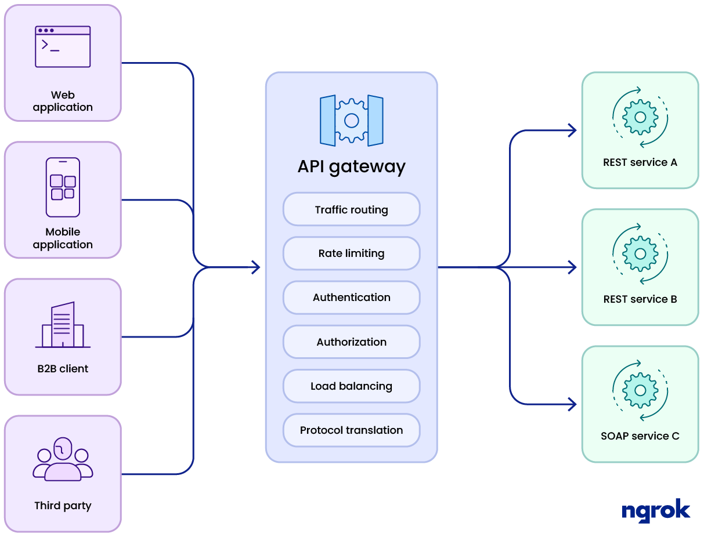

API Gateway
Um Gateway da API é um componente de rede que funciona entre o cliente e os serviços de backend. Em vez de se comunicar diretamente com seu backend, os clientes enviam suas chamadas apenas para o gateway da API. (Comunicação indireta)

Lá, as solicitações recebidas podem ser processadas diretamente ou encaminhadas para os serviços subjacentes. Dentre os serviços realizados por um gateway estão:
- Autenticação
- Controle de acesso
- Roteamento
- Balanceamento de carga
- Rate Limit
- Cache
- Monitoramento
- Monetização
O projeto de gateway que vamos usar como exemplo tem a seguinte estrutura de pastas
├── docker-compose.yml
├── gateway/
│ ├── internal/
│ ├── main.go
│ └── Dockerfile
└── mockapi/
├── main.go
└── Dockerfile
Para subir a estrutura de containers utilize
Mande a requisição para o Gateway, ou várias requisições...
Load Balancer (Balanceamento de Carga)
Distribui requisições entre múltiplos servidores backend, melhorando desempenho e tolerância a falhas. Estratégias comuns - Round-Robin (usada aqui) - Least Connections - Hash de IP
Implementação em Go Round-Robin
type LoadBalancer struct {
servers []string
index int
mutex sync.Mutex
}
func (lb *LoadBalancer) NextServer() string {
lb.mutex.Lock()
defer lb.mutex.Unlock()
server := lb.servers[lb.index]
lb.index = (lb.index + 1) % len(lb.servers)
return server
}
Implementação em Go com Least Connections
func getLeastConnBackend() string {
mu.Lock()
defer mu.Unlock()
least := ""
minConn := int(^uint(0) >> 1)
for _, b := range backends {
if failures[b] >= maxFailures {
continue
}
if connCounts[b] < minConn {
minConn = connCounts[b]
least = b
}
}
return least
}
Circuit Breaker
É um padrão de resiliência que evita que requisições sejam continuamente enviadas para um serviço que está falhando, como se fosse um "disjuntor" elétrico. Quando um backend apresenta falhas repetidas, o circuit breaker "desarma", impedindo temporariamente novas tentativas.
- Evita sobrecarga do serviço com falha.
- Reduz o tempo de espera no lado do cliente.
- Dá tempo para o serviço se recuperar.
Implementação
type CircuitBreaker struct {
Failures int // contador de falhas
LastFailed time.Time // última vez que falhou
Tripped bool // está aberto? (desarmado)
}
Se o número de falhas exceder um limite (failureThreshold), o circuito "abre" por um tempo (breakerTimeout).
Cada host possuí um breaker, é controlado por um mutex para segurança em concorrência (bMutex).
Um mutex (abreviação de mutual exclusion, ou exclusão mútua) é um mecanismo de sincronização usado para evitar condições de corrida (race conditions) em sistemas com concorrência, como em programas com múltiplas goroutines em Go. Imagine que várias goroutines estão acessando ou modificando uma variável ao mesmo tempo. Se não houver controle, os dados podem se corromper.
O mutex serve como um cadeado: - Apenas uma goroutine de cada vez pode "trancar" e acessar o recurso protegido. - As outras goroutines esperam até que o recurso seja liberado.
Rate Limiting
Limita o número de requisições permitidas por IP em um intervalo de tempo.
- Proteger contra abuso e ataques DDoS.
- Melhorar estabilidade dos serviços backend.
Implementação
if !exists || now.Sub(visitor.LastSeen) > rateWindow {
visitors[ip] = &Visitor{LastSeen: now, Count: 1}
return true
}
Se o IP não existe ainda, ele entra pela primeira vez com contador 1. Se o IP já existe, mas o tempo desde o último acesso (now.Sub(visitor.LastSeen)) passou de 1 minuto, então: - A contagem é reiniciada para 1 - O tempo (LastSeen) é atualizado para agora - E ele é permitido novamente
Se um IP exceder o número máximo de requisições no intervalo configurado, o acesso é negado com 429 Too Many Requests.
O problema é que esse mapa pode crescer muito com o tempo, para isso podemos utilizar duas estratégias... usar um garbage collector para limpar o mapa de tempo em tempo, ou usar um sistema de TTL(time to live)
go func() {
for {
time.Sleep(10 * time.Minute)
vMutex.Lock()
for ip, v := range visitors {
if time.Since(v.LastSeen) > 10*time.Minute {
delete(visitors, ip)
}
}
vMutex.Unlock()
}
}()
Implementado acima ficou o garbage collector, abaixo vou mostrar uma forma de como implementar o TTL. Adicione o go-cache
A implementação do ratelimiter.go seria a seguinte
package internal
import (
"net"
"net/http"
"strings"
"time"
"github.com/patrickmn/go-cache"
)
type Visitor struct {
Count int
}
var rateLimiter = cache.New(1*time.Minute, 2*time.Minute)
const rateLimit = 5
func GetIP(remoteAddr string) string {
ip, _, _ := net.SplitHostPort(remoteAddr)
return ip
}
func Allow(ip string) bool {
if x, found := rateLimiter.Get(ip); found {
visitor := x.(Visitor)
if visitor.Count >= rateLimit {
return false
}
visitor.Count++
rateLimiter.Set(ip, visitor, cache.DefaultExpiration)
return true
}
rateLimiter.Set(ip, Visitor{Count: 1}, cache.DefaultExpiration)
return true
}
| Item | Descrição |
|---|---|
cache.New(ttl, cleanup) |
Cria um cache com TTL automático para cada item. |
rateLimiter.Set() |
Adiciona ou atualiza a contagem por IP. |
rateLimiter.Get() |
Tenta recuperar o IP já armazenado. |
| Expiração automática | Depois de 1 minuto sem nova requisição, o IP some do cache automaticamente. |
Em proxy.go adicionamos o uso..